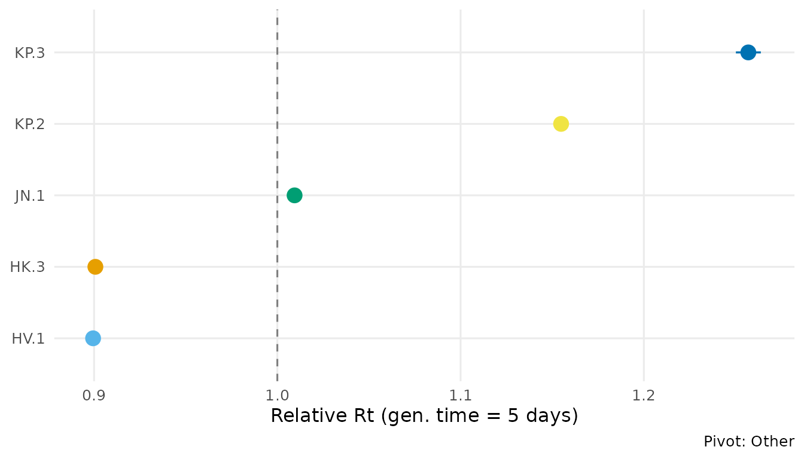
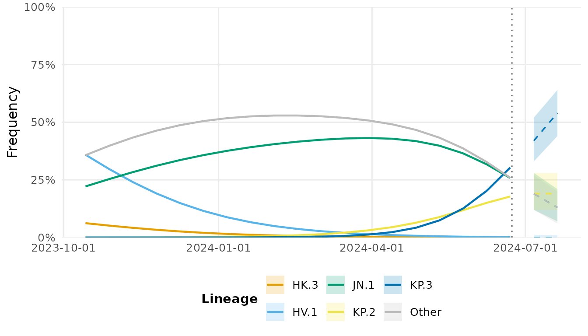

Analyzing real CDC surveillance data
Source:vignettes/real-data-analysis.Rmd
real-data-analysis.RmdOverview
This vignette demonstrates the complete lineagefreq workflow on
real surveillance data from the U.S. CDC. The built-in
dataset cdc_sarscov2_jn1 contains actual weighted variant
proportion estimates from CDC’s national genomic surveillance program,
covering the JN.1 emergence wave (October 2023 to June 2024).
Load data
library(lineagefreq)
data(cdc_sarscov2_jn1)
str(cdc_sarscov2_jn1)
#> 'data.frame': 171 obs. of 4 variables:
#> $ date : Date, format: "2023-10-14" "2023-10-14" ...
#> $ lineage : chr "BA.2.86" "HK.3" "HV.1" "JN.1" ...
#> $ count : int 26 220 1401 10 0 0 0 6158 185 63 ...
#> $ proportion: num 0.0032 0.0275 0.17508 0.00126 0 ...
vd <- lfq_data(cdc_sarscov2_jn1,
lineage = lineage, date = date, count = count)
vd
#>
#> ── Lineage frequency data
#> 9 lineages, 19 time points
#> Date range: 2023-10-14 to 2024-06-22
#> Lineages: "BA.2.86, HK.3, HV.1, JN.1, JN.1.11.1", ...
#>
#> # A tibble: 171 × 7
#> .date .lineage .count proportion .total .freq .reliable
#> * <date> <chr> <int> <dbl> <int> <dbl> <lgl>
#> 1 2023-10-14 BA.2.86 26 0.00320 8000 0.00325 TRUE
#> 2 2023-10-14 HK.3 220 0.0275 8000 0.0275 TRUE
#> 3 2023-10-14 HV.1 1401 0.175 8000 0.175 TRUE
#> 4 2023-10-14 JN.1 10 0.00126 8000 0.00125 TRUE
#> 5 2023-10-14 JN.1.11.1 0 0 8000 0 TRUE
#> 6 2023-10-14 KP.2 0 0 8000 0 TRUE
#> 7 2023-10-14 KP.3 0 0 8000 0 TRUE
#> 8 2023-10-14 Other 6158 0.770 8000 0.770 TRUE
#> 9 2023-10-14 XBB.1.5 185 0.0232 8000 0.0231 TRUE
#> 10 2023-10-28 BA.2.86 63 0.00793 8000 0.00788 TRUE
#> # ℹ 161 more rowsCollapse rare lineages
During JN.1’s rise, several lineages circulated at low frequency. We collapse those below 5% peak frequency into “Other”.
vd_clean <- collapse_lineages(vd, min_freq = 0.05)
#> Collapsing 3 rare lineages into "Other".
attr(vd_clean, "lineages")
#> [1] "HK.3" "HV.1" "JN.1" "KP.2" "KP.3" "Other"Fit MLR model
fit <- fit_model(vd_clean, engine = "mlr")
fit
#> Lineage frequency model (mlr)
#> 6 lineages, 19 time points
#> Date range: 2023-10-14 to 2024-06-22
#> Pivot: "Other"
#>
#> Growth rates (per 7-day unit):
#> ↓ HK.3: -0.1464
#> ↓ HV.1: -0.1483
#> ↑ JN.1: 0.01312
#> ↑ KP.2: 0.2016
#> ↑ KP.3: 0.3202
#>
#> AIC: 3e+05; BIC: 3e+05Growth advantages
ga <- growth_advantage(fit, type = "relative_Rt",
generation_time = 5)
ga
#> # A tibble: 6 × 6
#> lineage estimate lower upper type pivot
#> <chr> <dbl> <dbl> <dbl> <chr> <chr>
#> 1 HK.3 0.901 0.897 0.905 relative_Rt Other
#> 2 HV.1 0.899 0.898 0.901 relative_Rt Other
#> 3 JN.1 1.01 1.01 1.01 relative_Rt Other
#> 4 KP.2 1.15 1.15 1.16 relative_Rt Other
#> 5 KP.3 1.26 1.25 1.26 relative_Rt Other
#> 6 Other 1 1 1 relative_Rt Other
autoplot(fit, type = "advantage", generation_time = 5)
JN.1 shows a strong growth advantage over previously circulating XBB-derived lineages, consistent with published CDC estimates.
Forecast
fc <- forecast(fit, horizon = 28)
autoplot(fc)
#> Warning in ggplot2::scale_x_date(date_labels = "%Y-%m-%d"): A <numeric> value was passed to a Date scale.
#> ℹ The value was converted to a <Date> object.
Emergence detection
summarize_emerging(vd_clean)
#> # A tibble: 4 × 10
#> lineage first_seen last_seen n_timepoints current_freq growth_rate p_value
#> <chr> <date> <date> <int> <dbl> <dbl> <dbl>
#> 1 KP.2 2023-10-14 2024-06-22 19 0.104 0.0250 0
#> 2 KP.3 2023-10-14 2024-06-22 19 0.236 0.0419 0
#> 3 JN.1 2023-10-14 2024-06-22 19 0.0694 0.00158 2.28e-113
#> 4 Other 2023-10-14 2024-06-22 19 0.590 -0.00109 3.43e- 59
#> # ℹ 3 more variables: p_adjusted <dbl>, significant <lgl>, direction <chr>Sequencing power
How many sequences per week are needed to detect a variant at 1%?
sequencing_power(
target_precision = 0.05,
current_freq = c(0.01, 0.02, 0.05)
)
#> # A tibble: 3 × 4
#> current_freq target_precision required_n ci_level
#> <dbl> <dbl> <dbl> <dbl>
#> 1 0.01 0.05 16 0.95
#> 2 0.02 0.05 31 0.95
#> 3 0.05 0.05 73 0.95Session info
sessionInfo()
#> R version 4.5.3 (2026-03-11)
#> Platform: x86_64-pc-linux-gnu
#> Running under: Ubuntu 24.04.4 LTS
#>
#> Matrix products: default
#> BLAS: /usr/lib/x86_64-linux-gnu/openblas-pthread/libblas.so.3
#> LAPACK: /usr/lib/x86_64-linux-gnu/openblas-pthread/libopenblasp-r0.3.26.so; LAPACK version 3.12.0
#>
#> locale:
#> [1] LC_CTYPE=C.UTF-8 LC_NUMERIC=C LC_TIME=C.UTF-8
#> [4] LC_COLLATE=C.UTF-8 LC_MONETARY=C.UTF-8 LC_MESSAGES=C.UTF-8
#> [7] LC_PAPER=C.UTF-8 LC_NAME=C LC_ADDRESS=C
#> [10] LC_TELEPHONE=C LC_MEASUREMENT=C.UTF-8 LC_IDENTIFICATION=C
#>
#> time zone: UTC
#> tzcode source: system (glibc)
#>
#> attached base packages:
#> [1] stats graphics grDevices utils datasets methods base
#>
#> other attached packages:
#> [1] lineagefreq_0.2.0
#>
#> loaded via a namespace (and not attached):
#> [1] gtable_0.3.6 jsonlite_2.0.0 dplyr_1.2.1 compiler_4.5.3
#> [5] tidyselect_1.2.1 tidyr_1.3.2 jquerylib_0.1.4 systemfonts_1.3.2
#> [9] scales_1.4.0 textshaping_1.0.5 yaml_2.3.12 fastmap_1.2.0
#> [13] ggplot2_4.0.2 R6_2.6.1 labeling_0.4.3 generics_0.1.4
#> [17] knitr_1.51 MASS_7.3-65 tibble_3.3.1 desc_1.4.3
#> [21] bslib_0.10.0 pillar_1.11.1 RColorBrewer_1.1-3 rlang_1.2.0
#> [25] utf8_1.2.6 cachem_1.1.0 xfun_0.57 fs_2.0.1
#> [29] sass_0.4.10 S7_0.2.1 cli_3.6.6 pkgdown_2.2.0
#> [33] withr_3.0.2 magrittr_2.0.5 digest_0.6.39 grid_4.5.3
#> [37] lifecycle_1.0.5 vctrs_0.7.2 evaluate_1.0.5 glue_1.8.0
#> [41] farver_2.1.2 ragg_1.5.2 rmarkdown_2.31 purrr_1.2.2
#> [45] tools_4.5.3 pkgconfig_2.0.3 htmltools_0.5.9